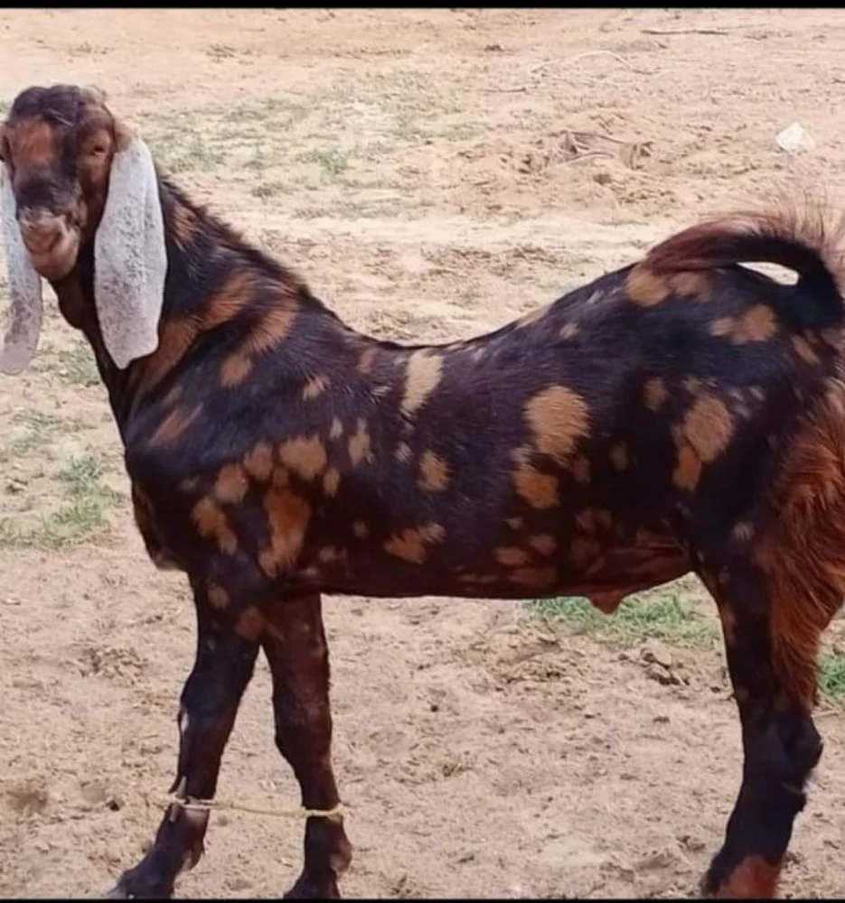
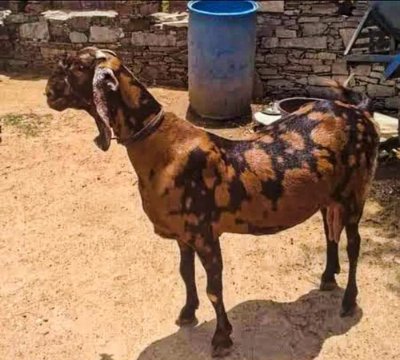
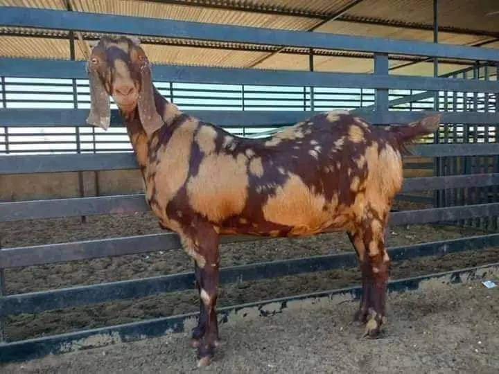

The Sirohi goat is a hardy breed originating from the Sirohi district of Rajasthan, India. Known for its resilience in arid and semi-arid regions, it is primarily raised for milk and meat production. Sirohi goats are medium-sized with distinctive horns and a lively temperament. They are an important part of the rural economy, valued for their adaptability and productivity.
